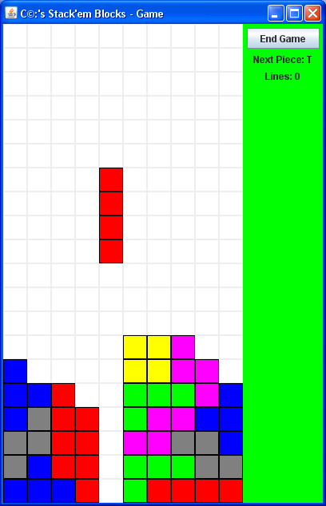
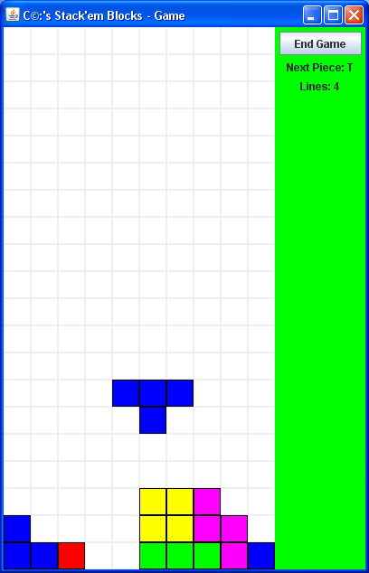
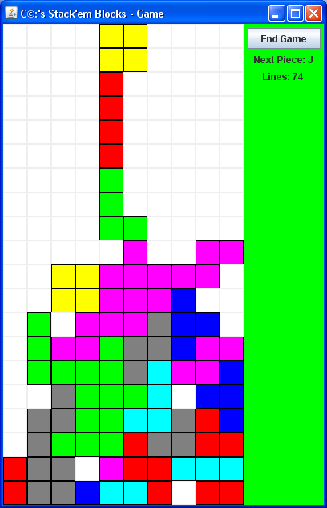
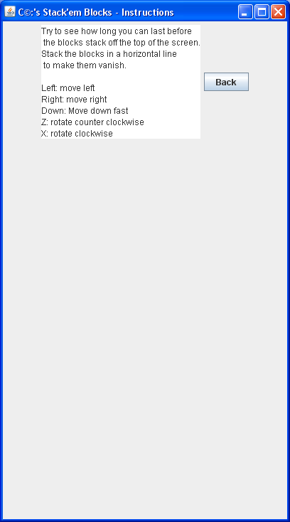

Christopher Gordon Carr
Stacking Blocks
Jar file: stackemblocks.jar
Java Doc: doc/index
Java Source: stackemblockssource.zip
Game options
- Rotate clockwise
- Rotate counterclockwise
- Move left/right and down
Features
- Falling blocks
- Blocks fall faster after 10 lines
Known Bugs
- I have seen blocks stop falling. You can still move them back and forth, and down manually
Screen Shots
|

About to complete 4 rows
|
|

Completed 4 rows
|
|

End Game
|
|

Instructions
|